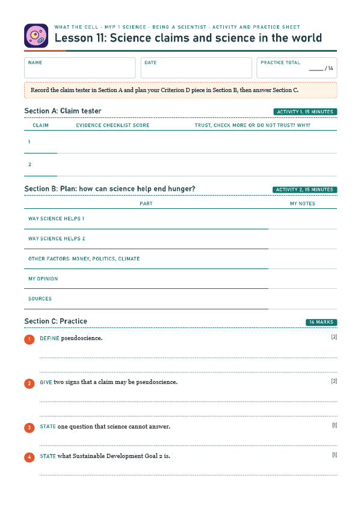

By the end of the lesson you can
- Distinguish between science and pseudoscience
- Test a claim using an evidence checklist
- Identify questions science cannot answer
- Discuss how science, money and politics affect hunger
Keys: arrows or a presentation clicker move the slides, F for full screen. Slides with a red dot have a video or simulation.
Videos (all 5 minutes or less)
- 2:12
Science vs Pseudoscience
Explainasphere. While you watch: What is pseudoscience? Slide 10.
Simulations
- Lab
Print and practise

Activity and practice sheet
Used in the lesson’s activities, with practice questions. Your teacher has the answers.
Download (PDF)Lesson 11 slides
All 16 slides in one file, to read again or print. The video buttons on the slides open YouTube.
Download the slides (PDF)Revising? The Revision tab on the unit page has the unit notes and review.
Class activity pack
Everything to print for the lesson’s activities: picture cards, sorting mats, station cards with their kit lists, and the teacher’s set-up notes. Print it before class.
Download the activity pack (PDF)Notes: Science claims and science in the world
claim
A statement that something is true. For example: this drink makes you smarter.
pseudoscience
Claims that sound scientific but are not backed by good evidence. For example: a bracelet that cures headaches.
source
Where information comes from. For example: a science magazine, a website.
bias
A one-sided view, often to sell something or win support. For example: an advert paid for by the seller.
Sustainable Development Goals
17 goals agreed by world leaders to make life better for everyone by 2030. For example: Goal 2: Zero hunger.
fertiliser
A substance that adds nutrients to soil so crops grow better. For example: nitrogen fertiliser.
Key words
| claim | a statement that something is true |
|---|---|
| pseudoscience | sounds scientific, lacks good evidence |
| source | where information comes from |
| bias | a one-sided view |
| SDG 2 | the goal of zero hunger |